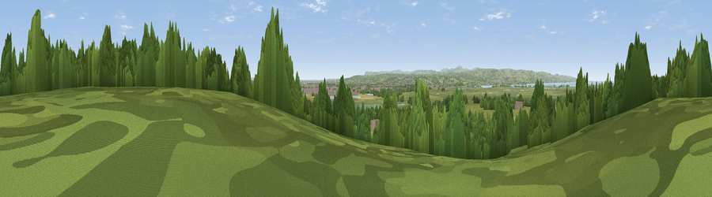

Viewpoint near Burton
#27934 in England · top 73% of its area beats it · near BurtonThe view, rendered

A 360° render of this exact spot computed from the terrain model, tree cover and land cover — summer colours, afternoon light, calibrated against photographs of famous viewpoints. Real trees, hedges and buildings will differ in detail.
The panorama
Grey silhouette: terrain skyline in each direction (720 bearings, Earth curvature and refraction included). Dashed green: skyline with trees (+15 m) and buildings (+8 m) as obstacles. Blue strip: how far the ground is visible on each bearing.
Where the view opens
Wedge length = distance to the farthest visible ground on that bearing (vegetation-aware). Rings at 10, 25 and 50 km.
What fills the view
57% grassland · 22% woodland · 11% cropland · 5% built-up · 3% wetland · 3% water
Angular shares of the visible panorama (visual magnitude), not map area. Landscape diversity 0.55 (0–1 Shannon).
Key numbers
More beautiful places nearby
The staircase of upgrades: each row has a higher view potential than everything closer. Driving times are estimates from straight-line distance, calibrated against real road routing — check an actual route before setting out.
| Place | Direction | Drive | Score |
|---|---|---|---|
| Viewpoint near Ness | NW · 1 km | ~3 min | 46.9 |
| Viewpoint near Gayton | NNW · 8 km | ~16 min | 65.1 |
| Thurstaston Hill | NW · 12 km | ~23 min | 66.8 |
| Viewpoint near Caldy | NW · 14 km | ~26 min | 68.0 |
| Helsby Hill | E · 18 km | ~31 min | 74.6 |
| Beacon Hill | E · 21 km | ~35 min | 77.3 |
| Viewpoint near Harthill | SE · 28 km | ~44 min | 80.5 |
| Rivington Pike | NE · 51 km | ~72 min | 81.9 |
53.26280, -3.03177 · source: screening · position refined by local search. Computed location — check access rights before visiting.